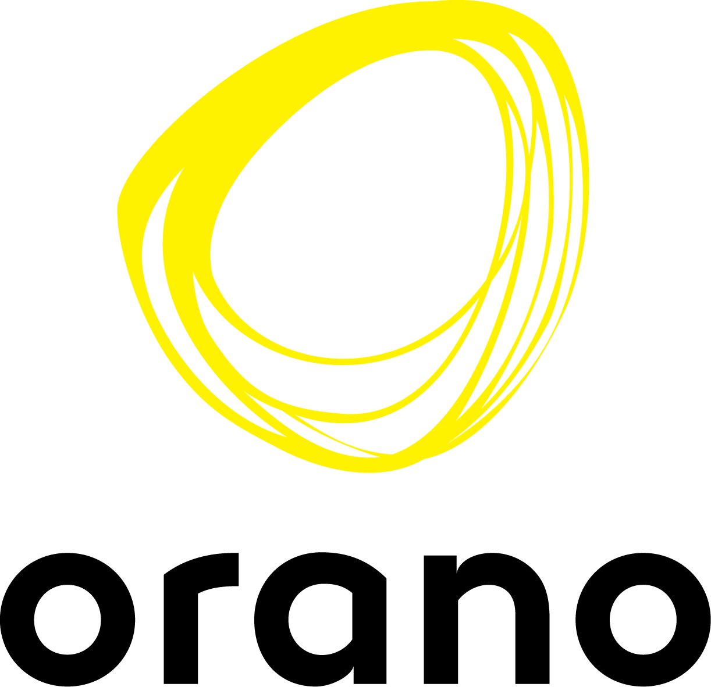

Qui suis-je ?
L’informatique m’intéresse depuis maintenant quelques années, c’est pourquoi j’ai décidé dans un premier temps de choisir la spécialité Informatique et Sciences du Numérique en terminal scientifique. Post bac je me suis orienté vers un BTS Système Numérique – Informatique et Réseaux afin d’approfondir mes compétences en programmation et en réseaux. J’ai voulu, par la suite, poursuivre mes études, dans une école d’ingénieur. J’ai choisi une formation par alternance car l’alternance permet d’allier la théorie de l’école avec un travail demandé concret en entreprise. Par ailleurs, j’ai eu la chance d’intégrer une grande entreprise, Orano Melox, leader mondial dans le recyclage de combustibles nucléaire usés. De plus je me passionne pour les différentes réactions et procédés nucléaires, qui permet de produire une énergie bas carbone.